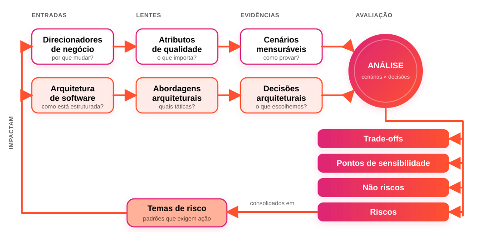
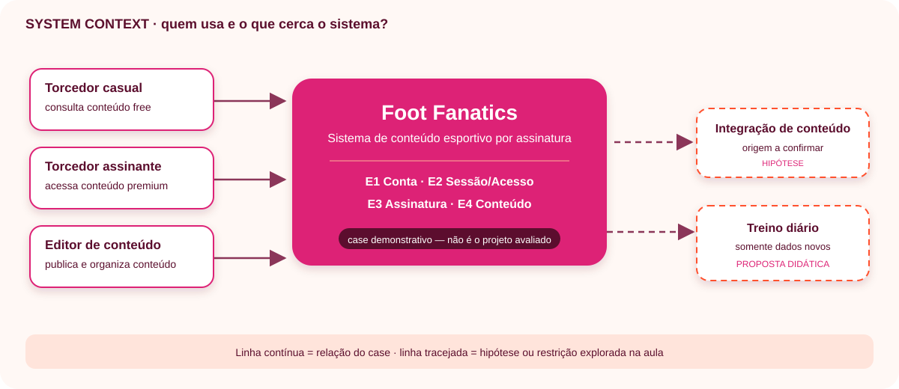
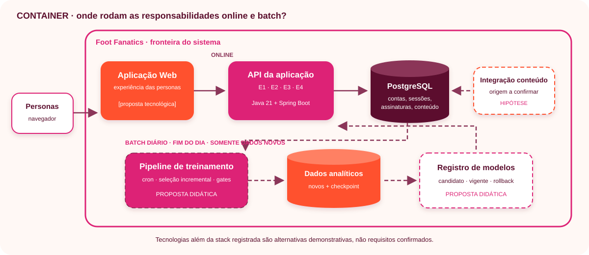
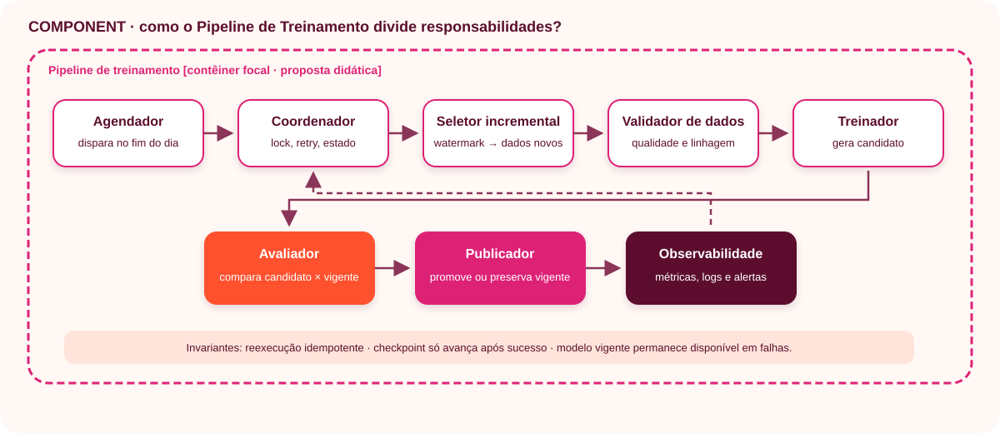
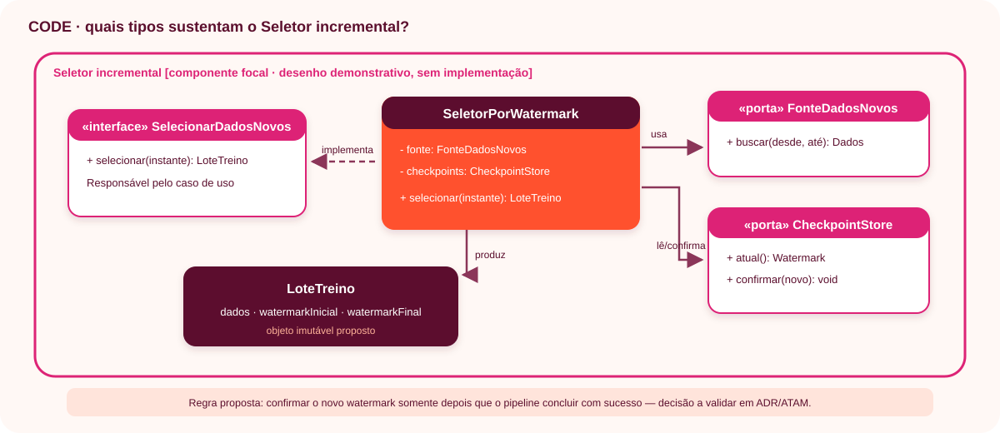

Qualidade de Software · 2026.2
Arquitetura e ATAM
com IA Agêntica
Dos requisitos às decisões arquiteturais verificáveis
Aula 04 · Semana 35Da arquitetura à análise ATAM
Um percurso agêntico para propor, confrontar e registrar decisões.

Não começamos de uma tela em branco
A aula anterior produziu personas e requisitos. Hoje eles governam a arquitetura.
Localizar artefatos reais.
Fato, lacuna e suposição.
Justificar escolhas.
Ligar ao requisito.
Requisito não escolhe componente sozinho
Traduzimos necessidades em responsabilidades e limites.
Personas
Quem precisa de valor?
Requisitos
O que deve fazer?
Qualidades
Quão bem?
Decisões
Como organizar?
C4: cada nível responde uma pergunta
Qual problema, para quem e com quais integrações?
Onde vivem online, dados e batch?
Quem agenda, seleciona, treina, valida e promove?
Como demonstrar o zoom sem implementar?
System Context · Foot Fanatics
Pergunta-guia: quem usa o sistema e com quais sistemas ele se relaciona?

Containers · online + batch
Pergunta-guia: onde executam as responsabilidades e onde os dados persistem?

Components · Pipeline de Treinamento
Pergunta-guia: como o contêiner focal distribui responsabilidades sem perder as invariantes?

Code · Seletor incremental
Pergunta-guia: quais tipos implementariam o componente sem antecipar código-fonte?

Dois ritmos, uma arquitetura
Interação imediata
Atende solicitações usando o modelo vigente.
Aprendizado diário
Ao fim do dia, processa somente dados novos.
Cron diário: o caminho seguro
cron + lock
watermark
dados
reprodutível
gates
rollback
Atributos de qualidade viram cenários
“Rápido”, “seguro” e “confiável” precisam ser observáveis.
Batch não derruba online.
Treino cabe na janela.
Mudança tem impacto limitado.
Dados protegidos.
Execução explicável.
Teto explícito.
Analisar antes de cristalizar
Como as abordagens respondem às qualidades prioritárias?
negócio e restrições
decisões propostas
respostas mensuráveis
riscos e trade-offs
Cenário mensurável: seis partes
Quem provoca?
O que acontece?
Em qual condição?
O que é afetado?
O sistema faz o quê?
Como saberemos?
Utility tree: prioridade com contexto
Atributo
Disponibilidade, segurança...
Refinamento
Qual aspecto importa?
Cenário
Importância × dificuldade.
Vocabulário das descobertas
Ponto de sensibilidade
Uma decisão afeta fortemente um atributo.
Ponto de trade-off
Melhora uma qualidade e prejudica outra.
Risco
Pode impedir o cenário.
Não-risco
Responde satisfatoriamente.
Tema de risco
Padrão recorrente entre decisões.
IA agêntica: especialização + confronto
Um agente propõe. Outros procuram falhas. O grupo decide.
extrai drivers
propõe C4
critica batch
LGPD
expõe trade-offs
Prompt 1 · Descoberta e drivers
copiar inteiroAtue como analista de requisitos e arquiteto de software. Leia integralmente, no repositório aberto, os arquivos que documentam personas, requisitos funcionais, requisitos não funcionais, regras de negócio, restrições e decisões anteriores. Trate esses artefatos como única fonte de verdade; cite caminhos e identificadores. Não invente usuários, volumes, tecnologias, SLAs ou regras. Separe fatos, lacunas, conflitos, suposições e perguntas abertas. Produza uma seção inicial em docs/arquitetura.md contendo: contexto e objetivo; stakeholders/personas; requisitos arquiteturalmente significativos; atributos de qualidade; drivers priorizados; glossário; riscos iniciais. Registre obrigatoriamente a restrição: existe um cron job executado diariamente ao final do dia para treinar ou retreinar usando somente dados novos. Para cada driver, informe sua origem. Não implemente código, não execute comandos shell e não altere requisitos.
Prompt 2 · C4 e pipeline
copiar inteiroAtue como arquiteto de solução e especialista em dados/ML. Leia personas, requisitos e drivers em docs/arquitetura.md. Não assuma fatos ausentes: liste suposições e alternativas. Complete o documento com responsabilidades, limites e interfaces. Inclua Mermaid compatível com C4 para contexto, contêineres e componentes, e sequência separando fluxo online e batch. Modele o cron diário processando somente dados novos e analise: watermark/checkpoint, idempotência, lock/concorrência, retry/recuperação, qualidade e linhagem, reprodutibilidade, validação do modelo, versionamento/registry, promoção, rollback, observabilidade, segurança/LGPD e custos. Justifique cada decisão por requisito ou atributo; marque decisões sem requisito. Não implemente código, não forneça comandos shell e não modifique a fonte de verdade.
Prompt 3 · Análise ATAM
copiar inteiroAtue como equipe avaliadora ATAM independente. Leia personas, requisitos e docs/arquitetura.md. Não invente métricas: valores propostos são hipóteses pendentes. Identifique drivers, atributos prioritários e abordagens. Crie uma utility tree e cenários no formato fonte, estímulo, ambiente, artefato, resposta e métrica, priorizados por importância e dificuldade. Avalie execução diária, dados novos, falha parcial, jobs sobrepostos, degradação dos dados, candidato pior, rollback, indisponibilidade e vazamento. Registre pontos de sensibilidade, trade-offs, riscos, não-riscos e temas de risco, vinculados a cenários e decisões. Acrescente a análise sem apagar evidências anteriores. Não implemente, não execute comandos shell e não trate hipótese como fato.
Prompt 4 · Revisão e ADRs
copiar inteiroAtue como painel revisor formado por arquiteto, dados/ML, segurança/LGPD, operações/SRE, custos e facilitador ATAM. Leia os requisitos e docs/arquitetura.md. Cada papel deve apresentar objeções fundamentadas; consolide divergências sem escondê-las. Verifique coerência entre C4, sequência, pipeline, utility tree e riscos. Crie ADRs com contexto, forças, alternativas, decisão, consequências, riscos e requisitos. Finalize com a matriz requisito → decisão → componente → evidência, requisitos sem cobertura, decisões sem requisito, suposições, perguntas, riscos aceitos e próximos experimentos. Confirme watermark, idempotência, lock, retry, gates, registry, promoção/rollback, observabilidade, LGPD e custo. Não escreva código, não execute comandos shell e não altere a fonte de verdade.
Arquitetura discutível e rastreável
Documento principal
docs/arquitetura.md- C4 completo e sequência
- Utility tree e cenários ATAM
Trilha de decisão
- Riscos e trade-offs
- ADRs
- Rastreabilidade ponta a ponta
Catálogo de táticas de Len Bass
Toda decisão da sua arquitetura deve nomear uma tática — e assumir o custo dela.
O que tem no documento
- Catálogo completo por atributo: disponibilidade, interoperabilidade, modificabilidade, desempenho, segurança, testabilidade e usabilidade
- Acréscimos da 4ª edição: implantabilidade, integrabilidade, eficiência energética e safety
- Para cada tática: o que ela controla, o custo que impõe e como testá-la
- Como a tática vira risco, sensibilidade ou trade-off no ATAM
- Aplicação no Foot Fanatics e no projeto Organização de Recursos
docs/arquitetura.mdArquitetura é hipótese
Requisitos orientam. Cenários pressionam. Evidências sustentam.
Decidir · confrontar · registrar